Acércate al telescopio
Mirando a traves del telescopio...
Dos cielos cuentan una historia
El cielo la noche que nacio Juan

Esa noche, bajo Aries, el universo encendia una llama inquieta y apasionada. Sin saberlo, las estrellas ya trazaban el camino hacia alguien.
Dos años despues, en otro lugar del mundo...
El cielo la noche que nacio Mafe

Bajo Leo, el cosmos escribia luz y calidez. Otra alma llegaba al mundo, sin saber que alguien ya la estaba esperando entre las estrellas.
Dos cielos distintos, dos historias separadas...
Pero el mismo universo que conspiro para unirlos
Juan y Mafe
Escritos en las estrellas desde el principio
Hay momentos en el universo que marcan destinos...
Un cielo que marcó el inicio de una historia
Otro cielo, otra historia… destinada a cruzarse